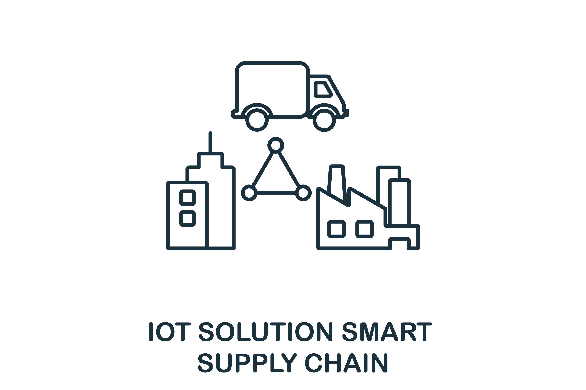

O que é?
Smart Supply Chain é uma cadeia de suprimentos inteligente baseada em tecnologias como Internet das Coisas (IoT), Inteligência Artificial, Big Data e automação.
Essas tecnologias permitem monitoramento em tempo real, rastreamento de produtos e melhoria da eficiência logística.
Momento Atual
Atualmente empresas utilizam sensores inteligentes, análise de dados e sistemas automatizados para melhorar processos logísticos e reduzir custos operacionais.
Desafios
- Segurança da informação
- Alto custo de implementação
- Integração entre sistemas
- Necessidade de profissionais qualificados
Conclusão
A Smart Supply Chain representa uma evolução importante da logística moderna, tornando as cadeias de suprimentos mais inteligentes, conectadas e eficientes.